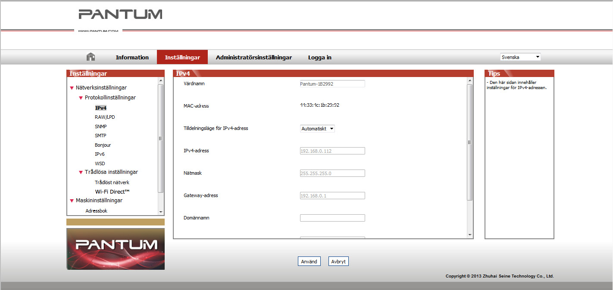

4. Inställningar för trådnätverk (skrivarmodeller för trådnätverk)
Du kan eventuellt behöva ange en del nätverksparametrar för skrivaren. Parametrarna kan anges i den inbyggda webbservern.
4.1. Inställning av IP-adress
Skrivarens IP-adress kan genereras automatiskt med DHCP-funktionen eller ställas in manuellt.
| Automatisk inställning
Den automatiska DHCP-inställningen är aktiverad som standard på skrivaren.
1. Anslut skrivaren till nätverket med en nätverkskabel och gå igenom förberedelserna för start.
2. Skrivaren får automatiskt en IP-adress som tilldelas av servern. Den automatiskt tilldelade IP-adressen kan användas efter några minuter.
|
|
Obs!
|
• Om DHCP-funktionen inte kan hämta en IP-adress automatiskt används standard-IP-adressen 169.254.xx.xx.
• Beroende på DHCP-egenskaperna kan den IP-adress som skrivaren tilldelas automatiskt av nätverket variera om skrivaren inte har använts under en längre tid, eller om nätverkets accesspunkter ändras, vilket kan medföra att skrivaranslutningen inte lyckas. Det rekommenderas att den IP-adress som tilldelas automatiskt av nätverket är knuten till skrivarens Mac-adress när DHCP-funktionen aktiveras.
|
| Manuell inställning
Ange IP-adressen i webbläsarens adressfält för att öppna den inbyggda webbservern.
1. Klicka på Inställningar i navigeringsfältet för att öppna rutan Inställningar.
2. Välj Nätverksinställningar – IPV4-inställningar.
3. Ange läge för tilldelning av IP-adress (manuellt), IP-adress och delnätsmask. Övriga inställningar är valfria.
4. Klicka på Verkställ för att spara inställningarna.
4.2. Installation av skrivaren i nätverket
För den här inställningen ansluts skrivaren direkt till nätverket. Den kan konfigureras så att alla datorer i nätverket kan skriva ut direkt till skrivaren.
1. Anslut först nätverkskabeln till skrivarens nätverksport för att upprätta en direkt anslutning till nätverket innan skrivaren startas.
2. Starta skrivaren och vänta tills statusindikatorn på kontrollpanelen visar statusen Klar enligt figuren nedan.

3. Sätt i skrivarens CD i datorn. Om installationsprogrammet inte startar automatiskt bläddrar du till filen "setup.exe" på CD-skivan och dubbelklickar på den för att köra filen.
4. Följ anvisningarna i programmet.
5. Fortsätt för att slutföra installationen.
4.3. Inställningar för nätverksprodukter
4.3.1. Visa eller ändra nätverksinställningar
Du kan använda den inbyggda webbservern för att visa eller ändra IP-inställningarna.
1. Håll knappen "Avbryt/Fortsätt" på kontrollpanelen intryckt för att skriva ut testsidan och se skrivarens IP-adress. Testsidan skrivs ut när du håller inne knappen på kontrollpanelen (enligt figuren nedan) när skrivaren är i vänteläge.
2. Ange IP-adressen i webbläsarens adressfält för att öppna den inbyggda webbservern.
3. Klicka på fliken Inställningar för att hämta nätverksinformationen. Ändra inställningarna vid behov.

4.3.2. Inställning eller ändring av webbläsarens lösenord
Använd den inbyggda webbservern för att ange ett nätverkslösenord eller för att ändra ett befintligt lösenord.
|
|
Obs!
|
• Användarnamn och lösenord är som standard "admin" respektive "000000".
|
1. Logga in för att öppna den inbyggda webbservern.
2. Klicka på fliken Administratörsinställningar.
3. Ange det nya lösenordet i fälten Lösenord och Bekräfta lösenord.
4. Klicka på knappen Verkställ längst ned i fönstret för att spara inställningar.
4.3.3. Återställning till fabriksinställningarna
Om du vill återställa alla parameterinställningar för skrivaren kan du återgå till fabriksinställningarna genom att hålla inne knappen "Avbryt/Fortsätt" när skrivaren är avstängd. Slå på den och håll inne i 10 sekunder tills skrivaren anger status Klar för att avsluta återställningen.